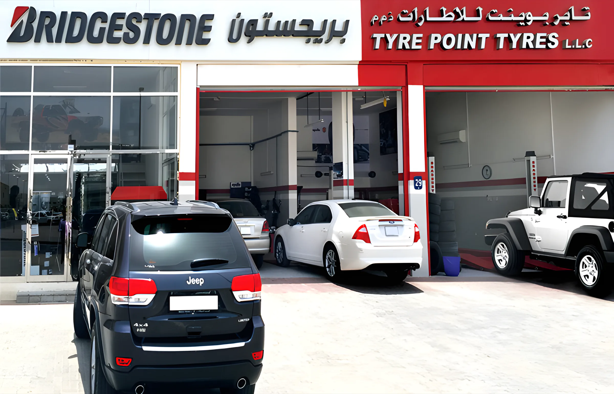
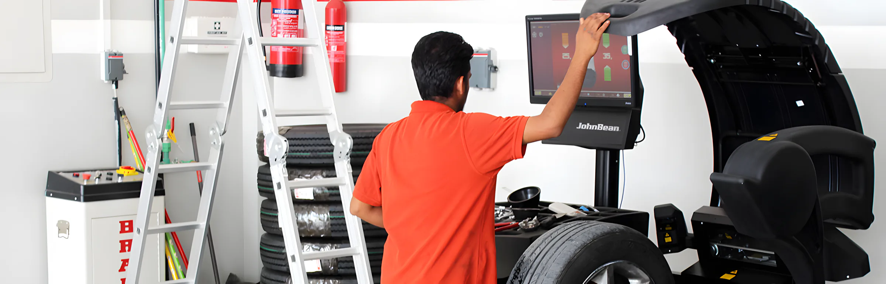
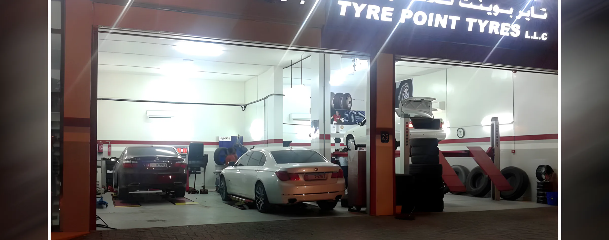
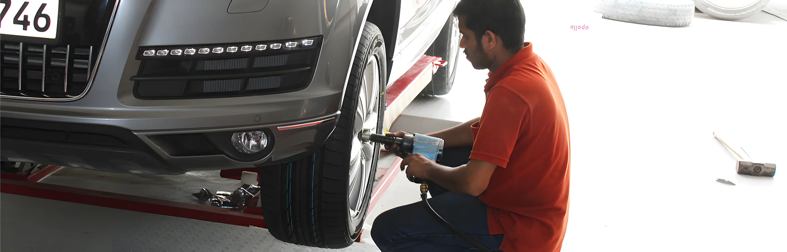
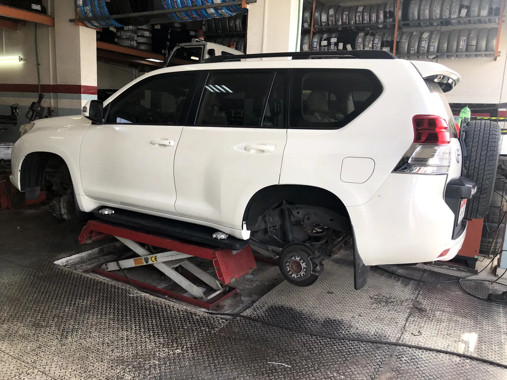
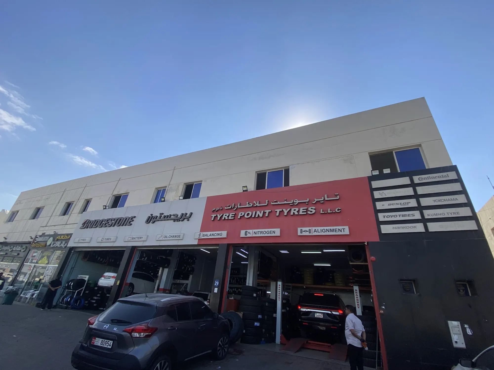
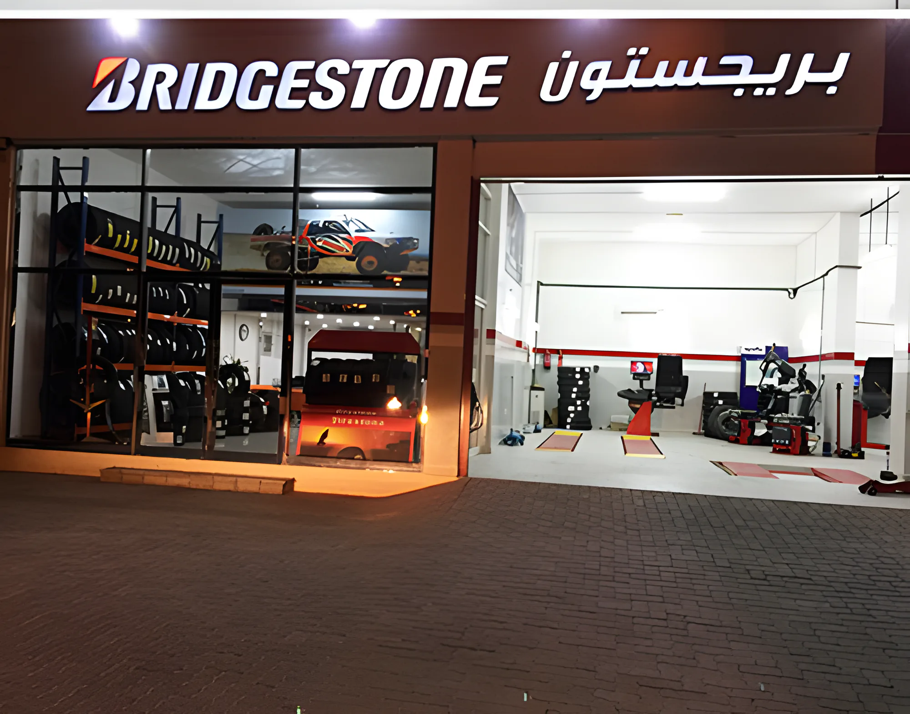

Tyre Point Tyres
We sell and fit tyres for cars, SUVs and 4x4s in Musaffah. Bridgestone, Michelin, Continental, Yokohama and more on the racks, with balancing and alignment done in the same visit.Car, SUV and 4x4 tyres, fitted and balanced in Musaffah M10.
Musaffah M10, Abu Dhabi
تاير بوينت للإطارات ذ.م.م
Open daily from 8am
Sat–Thu 8am–9pm
Fri 8am–12pm, 3:30–9pm
Read your tyre, send us the size
Every tyre has its size printed on the side. Pick the same three numbers here and we reply on WhatsApp with what we have in stock and the price, fitted and balanced. Or just send us a photo of the sidewall.
Find it on the side of the tyre, near the brand name. The four digits after “DOT”, like 2324, are the week and year the tyre was made.
What we do in the workshop
Bring the car in for one job or all of them. Everything happens under one roof in Musaffah M10.
01Tyres, all brandsCar, SUV and 4x4 tyres from the racks
- Bridgestone, Michelin, Continental, Goodyear, Yokohama, Pirelli and more
- Send the size or a photo of the sidewall on WhatsApp
- Old tyres off and new ones on in the same visit

02Tyre fittingOld tyre off, new tyre on, on the lift
- Cars, SUVs and 4x4s
- Fitting and balancing together
- Ask us before you come if your rims are oversized

03Wheel balancingElectronic balancing for a smooth drive
- Electronic wheel balancing
- Worth doing with every new tyre
- The fix for a steering wheel that shakes at 100+ km/h
04Wheel alignmentCar pulling to one side? Start here
- Clamps on all four wheels, readings on screen
- Steering wheel straight again
- Good to check after new tyres or a hard pothole
05Tyre rotationFront and rear swapped so they wear evenly
06Puncture repairNail in the tread? Bring it in
- Tread punctures repaired
- Honest call on what can be fixed
- Open until 9pm
07Nitrogen fillingTyres filled with nitrogen instead of air
- With new tyres or on its own
- Pressures set to your car’s numbers
08Engine oil and filterOil change while the car is on the lift
- Engine oil and oil filter
- Tell us the car, model and year
- Pair it with a tyre rotation

09BatteriesBattery tested and replaced at the shop
- Battery tested before we change it
- Tell us the car, model and year
Brands on our racks and on our sign.
A tyre shop, run by tyre people
Tyre Point Tyres LLC sells branded tyres and does fitting, electronic wheel balancing and alignment, from our shop in Musaffah, Abu Dhabi and our office in Al Qusais, Dubai.
Our sales and technical team came to us from the leading tyre companies. Two words run the place: quality and commitment.

“I took two of my cars here. Both had issue with vibration, turned out it was a mechanical issue with the mounts and lower arms which they identified, and asked me to get it fixed and then come back for the alignment and balancing. Honest and professional, they could have just done the alignment and charged me, but instead saved me money.”Inside the shop



Find us
Open nowMusaffah M10, Abu Dhabi. P.O. Box 91328.
Look for the red Tyre Point Tyres sign next to the big Bridgestone sign. Drive straight into the bays.
| Saturday | 8am – 9pm |
| Sunday | 8am – 9pm |
| Monday | 8am – 9pm |
| Tuesday | 8am – 9pm |
| Wednesday | 8am – 9pm |
| Thursday | 8am – 9pm |
| Friday | 8–12, 3:30–9pm |
Dubai office: Al Qusais, P.O. Box 80135. 04 252 1323 · 052 894 4884